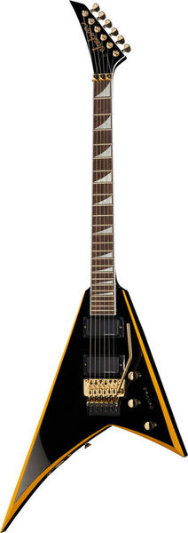
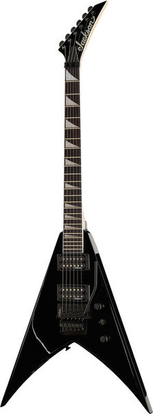

Jackson RRX24 Black with Yellow Bevels
X-Series Body: Basswood Neck: Maple, graphite reinforced with scarf joint Fretboard: Laurel 24 Jumbo frets Reversed pearloid sharkfin inlays Scale: 648 mm Nut width: 42.8 mm Pickups: Seymour Duncan AHB1BN (neck) and AHB-1B (bridge) humbuckers 2 Volume and 1 tone controls 3-Way switch Sunken Floyd Rose special double-locking tremolo Colour: Black with yellow bevels

Jackson JS32 King V AH Gloss Black
Poplar body One-piece bolt-on maple neck with graphite reinforcement and scarf joint Nut width: 42.8mm Amaranth fretboard Scale: 648mm 24 Jumbo frets White Pearloid Sharkfin Inlays 2 x Jackson High Output humbucker Jackson licensed Double Locking Floyd Rose tremolo Jackson Sealed die-cast machine heads Black hardware Finish: Gloss Black